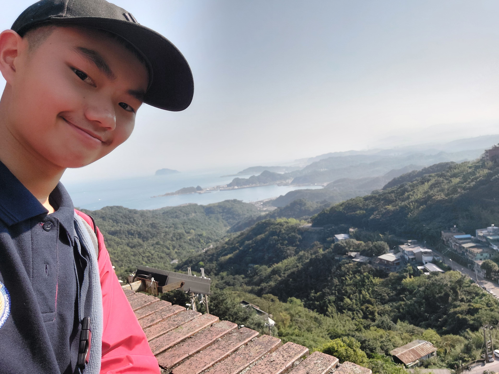

About Me
About Him
Darren Taslim

Nama : Darren
Umur : 14
Lahir pada 19 Desember
Gender : Cowo
Tinggi Badam : 168~cm
Berat Badan : 54 kg
Murid SMP Santa Laurensia Alam Sutera
Kelas : 8
Hobby : Memain Games